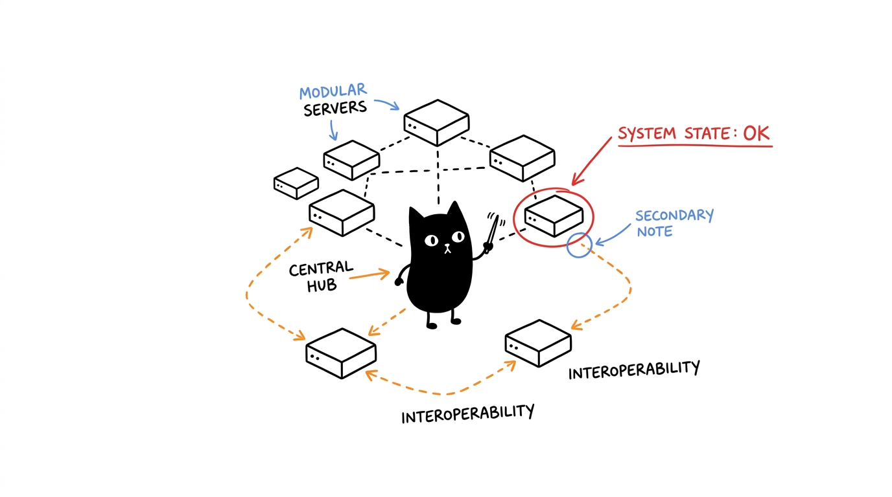

Arsitektur Ekosistem
Dua tulang punggung (backbone) mengoordinasikan sepuluh sel melalui standar MCP stdio (JSON-RPC 2.0). Mitosis merencanakan dan merutekan tugas; Genome mengingat memori persisten. Setiap sel lainnya bersifat stateless di balik batas domainnya.

Dual Backbone
| Backbone | Menangani & Memiliki | Tidak Pernah Menangani |
|---|---|---|
Mitosis (hela-mitosis) | Penalaran bertahap, dekomposisi tugas, perutean rantai alat, template prompt | Status persisten |
Genome (hela-genome) | Grafik pengetahuan SQLite, entitas/relasi, konteks sesi, sinkronisasi sentral | Keputusan eksekusi |
Aturan interaksi: agen berpikir melalui Mitosis, menyimpan memori melalui Genome, dan bertindak melalui sel-sel lainnya. Sinergi terverifikasi (lihat npm test): Mitosis+Genome (backbone), Enzyme+Cytosol (riset), Membrane+Nucleus+Ribosome (workspace).
Transport Komunikasi
Semua sel berkomunikasi melalui protokol MCP via stdio: JSON-RPC 2.0 per baris pada stdin/stdout, dan log pada stderr. Tanpa port terbuka, tanpa autentikasi jaringan, tanpa latensi soket — klien mengeksekusi node <dir>/<entry> sesuai config/inventory.json. Pin revisi commit per sel memastikan instalasi selalu deterministik (gunakan flag --dev jika ingin mengikuti branch aktif).
Referensi Server & Organel
Sepuluh sel. Cakupan CORE berjalan murni headless; SPECIALIZED membutuhkan GUI, emulator perangkat, atau dependensi runtime khusus.
HeLa Mitosis
hela-mitosis · chaining-mcp · CORE · 29 alatPembagian kognitif dan orkestrasi alur kerja. Dilengkapi runtime agen Needle 3 terbundel (rencana → eksekusi → observasi, sepenuhnya offline), penemuan alat peer, penalaran sekuensial bertenaga Needle, dekomposisi tugas, 40 template prompt domain, katalog skills, dan eskalasi opsional OpenRouter (X-Title: hela-mitosis).
entry dist/index.js · repo 1999AZZAR/chaining-mcp · env OPENROUTER_API_KEY, CHAINING_LLM_MODEL, CHAINING_LLM_ENABLED, GITHUB_TOKEN…
agent_run, analyze_with_sequential_thinking, sequentialthinking, workflow_orchestrator, workflow_status, workflow_cancel, llm_decompose_task, llm_suggest_route, llm_query, llm_summarize, list_skills, search_skills, get_skill, suggest_skill_chain, search_prompts, get_prompt, list_mcp_servers, validate_tool_chain
HeLa Genome
hela-genome · project-mcp · CORE · 38 alatGrafik pengetahuan SQLite hidup (memory.db) dengan pencarian teks penuh FTS5, pelacakan relasi entitas, pemulihan konteks lintas-sesi, dan pemindaian rahasia/kredensial.
entry dist/index.js · repo 1999AZZAR/project-mcp
initialize_memory, create_entity, create_relation, add_observation, search_nodes, open_node, get_session_context, sync_central_memory, execute_sql, query_data, inspect_untrusted_text, scan_project_secrets
HeLa Membrane
hela-membrane · filesystem-mcp · CORE · 16 alatBatas sistem berkas terisolasi: pencarian rekursif, pengawasan berkas (file watch), inspeksi biner, dan ekstraksi arsip.
entry dist/index.js · repo 1999AZZAR/filesystem-mcp
read_file, write_file, copy_file, move_file, delete_file, get_file_info, create_directory, list_directory, find_files, search_in_files, watch_file, archive_files, extract_archive
HeLa Nucleus
hela-nucleus · terminal-mcp · CORE · 7 alatEksekusi perintah terisolasi dengan pembatasan subshell aman dan optimasi token RTK.
entry build/index.js · repo 1999AZZAR/terminal-mcp
execute_command, transfer_file, terminal_ls, terminal_grep, terminal_cat, terminal_session_close, terminal_session_list
HeLa Ribosome
hela-ribosome · menager-mcp · CORE · 28 alatMultiplexing proses PTY polyglot ditambah kontrol plane opencode bawaan: spawn/send/fork sesi agen terarah, penemuan model, statistik penggunaan, dan instance serve cepat.
entry build/index.js · repo 1999AZZAR/menager-mcp
session_spawn, session_write, session_read, session_hook, session_wait, session_close, agent_spawn, agent_send, agent_fork, agent_list, opencode_models, opencode_server_spawn
HeLa Enzyme
hela-enzyme · researcher-mcp · CORE · 29 alatPencarian web zero-key dual-tier + arXiv + Google News RSS + riset Wikipedia dengan sistem cache, pemeriksa fakta, dan fan-out satu panggilan research_brief (sumber paralel, dedup lintas sumber, stempel kesegaran).
entry dist/index.js · repo 1999AZZAR/researcher-mcp · env GOOGLE_API_KEY, GOOGLE_CSE_ID, WIKIPEDIA_*
google_search, wikipedia_search, wikipedia_get_summary, fact_checker, academic_search, content_summarizer, extract_content, research_brief, keyword_extraction
HeLa Cytosol
hela-cytosol · browser-mcp · CORE · 93 alatOtomasi penuh Playwright: persepsi hierarki pohon aksesibilitas (AX-tree), pengisian formulir multi-tipe, intersep jaringan, tangkapan layar, dan persistensi sesi.
entry src/server.js · repo 1999AZZAR/browser-mcp
browser_navigate, browser_click, browser_fill_form, browser_screenshot, browser_get_page_markdown, browser_get_accessibility_tree, browser_intercept, browser_extract_schema
HeLa Phenotype
hela-phenotype · designer-mcp · SPECIALIZED · 29 alatTeori Desain sebagai Layanan: token warna OKLCH, referensi merek terkenal (Linear, Stripe…), sintesis Tailwind, komponen 8-state, audit aksesibilitas WCAG, dan gerbang anti-slop.
entry dist/index.js · repo 1999AZZAR/designer-mcp
generate_rules, generate_tokens, palette_fetch, brand_fetch_design_md, generate_tailwind_config, generate_8state_component, audit_accessibility, evaluate_style
HeLa Receptor
hela-receptor · scrcpy-mcp · SPECIALIZED · 46 alatOtomasi Android melalui ADB: inspeksi hierarki XML antarmuka, sentuhan tap/swipe/text, perekaman layar, dan siklus hidup aplikasi. Membutuhkan perangkat fisik atau emulator.
entry dist/server.js · repo 1999AZZAR/scrcpy-mcp
start_session, device_list, device_info, ui_dump, ui_find_element, tap, swipe, input_text, key_event, screenshot, screen_record_start, app_install, shell_exec
HeLa Plastid
hela-plastid · ll3m-mcp · SPECIALIZED · 15 alatPemodelan Blender otonom: rencana → skrip prosedural → render → simpan berkas .blend. Membutuhkan instalasi Blender 4+.
entry brain/dist/index.js · repo 1999AZZAR/ll3m-mcp
generate_modeling_plan, execute_blender_code, get_scene_summary, render_output, save_blend, get_screenshot, get_fast_feedback